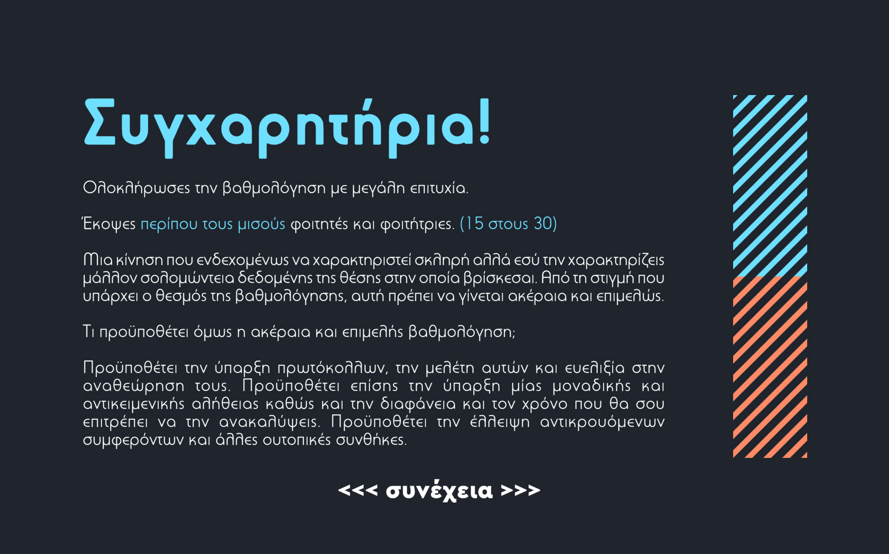
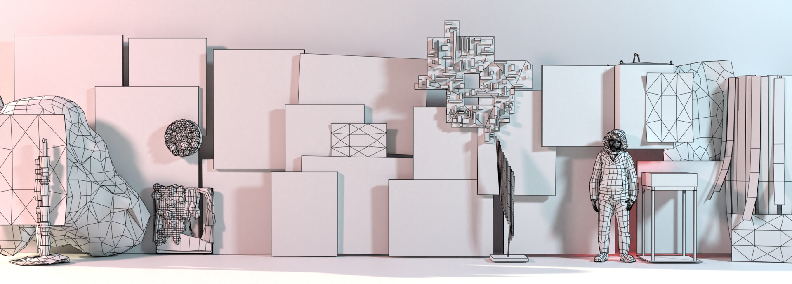
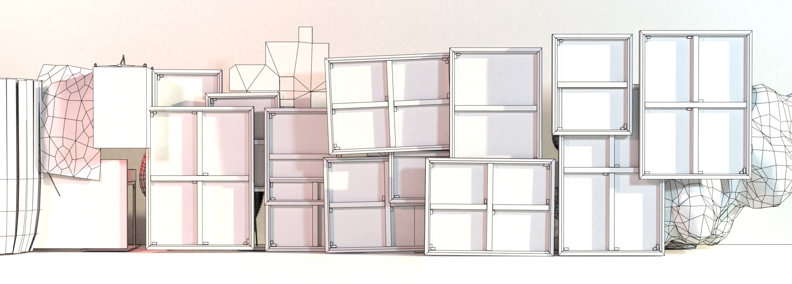
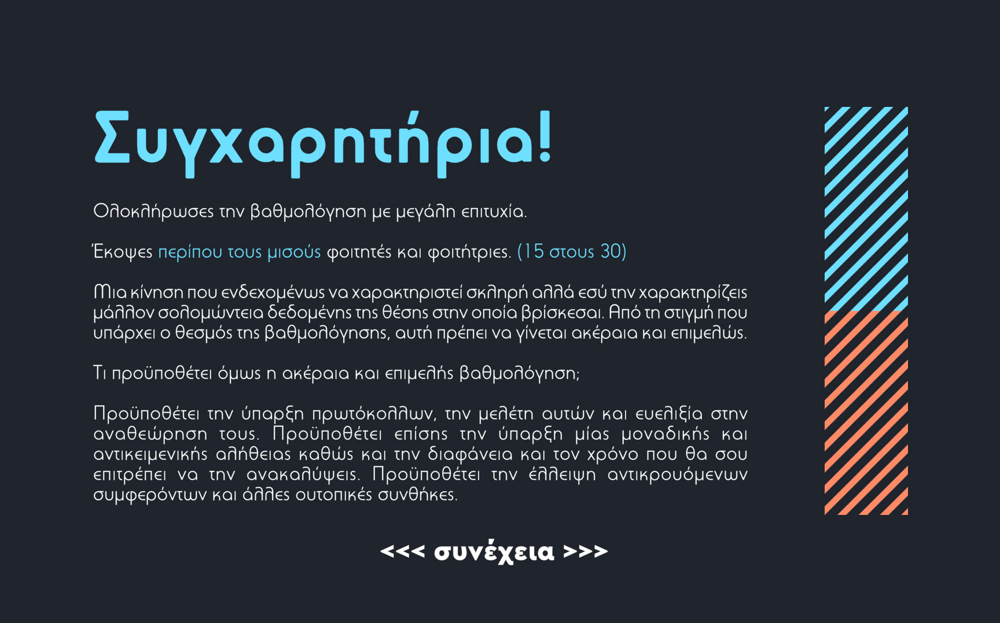
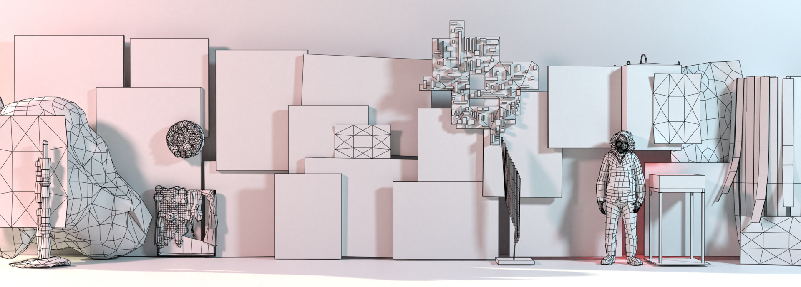
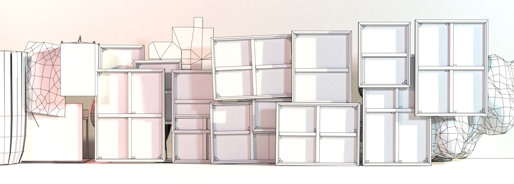

Ένα βιντεοπαιχνίδι που πραγματεύεται την σχέση μεταξύ της δημιουργικής έκφρασης και των θεσμικών πλαισίων.
Μπορείτε να το δοκιμάσετε εδώ: simmer.io/@Rigas/visual-ninja
Ως παίκτης, αναλαμβάνεις τον ρόλο ενός καθηγητή πανεπιστημίου, όπου σου δίνεται η δυνατότητα να 'κόψεις' έργα φοιτητών, κόβοντας τα κυριολεκτικά, ή να τα 'περάσεις', αφήνοντάς τα να περάσουν κυριολεκτικά, εντός ενός χρονικού ορίου.
Έπειτα, ανάλογα με τον αριθμό των φοιτητών που 'έκοψες', εμφανίζεται ένα κείμενο, το οποίο σχολιάζει την προσέγγιση σου και τις πιθανές προεκτάσεις μίας τέτοιας πολιτικής σε ένα ευρύτερο πλαίσιο.
Όλα τα έργα είναι αναπαραστάσεις πραγματικών έργων από το πανεπιστήμιο στο οποίο σπούδαζα εκείνη την περίοδο.
 




